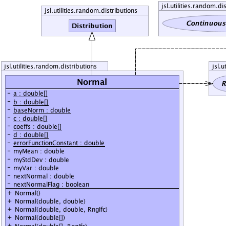
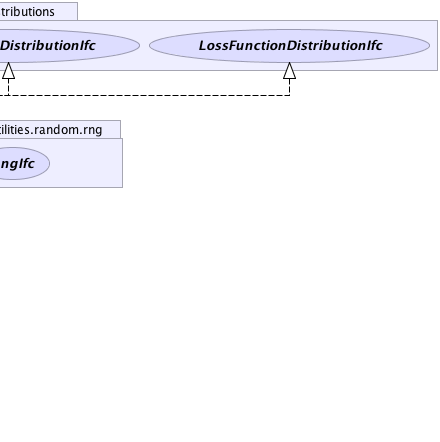
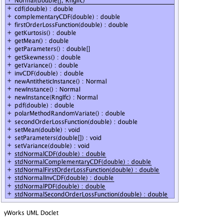

jsl.utilities.random.AbstractRandom
jsl.utilities.random.distributions.Distribution
jsl.utilities.random.distributions.Normal
jsl.utilities.random.AbstractRandom
jsl.utilities.random.distributions.Distribution
jsl.utilities.random.distributions.Normal
|
||||||||||
| PREV CLASS NEXT CLASS | FRAMES NO FRAMES | |||||||||
| SUMMARY: NESTED | FIELD | CONSTR | METHOD | DETAIL: FIELD | CONSTR | METHOD | |||||||||
java.lang.Object
public class Normal
Models normally distributed random variables
|  |  |
|  |
| Nested Class Summary |
|---|
| Nested classes/interfaces inherited from class jsl.utilities.random.AbstractRandom |
|---|
AbstractRandom.RandomControls |
| Field Summary | |
|---|---|
private static double[] |
a
|
private static double[] |
b
|
private static double |
baseNorm
|
private static double[] |
c
|
private static double[] |
coeffs
|
private static double[] |
d
|
private static double |
errorFunctionConstant
|
private double |
myMean
|
private double |
myStdDev
|
private double |
myVar
|
private double |
nextNormal
|
private boolean |
nextNormalFlag
|
| Fields inherited from class jsl.utilities.random.distributions.Distribution |
|---|
myRNG |
| Fields inherited from class jsl.utilities.random.AbstractRandom |
|---|
myId, myName |
| Constructor Summary | |
|---|---|
Normal()
Constructs a normal distribution with mean 0.0 and variance 1.0 |
|
Normal(double[] parameters)
Constructs a normal distribution with mean = parameters[0] and variance = parameters[1] |
|
Normal(double[] parameters,
RngIfc rng)
Constructs a normal distribution with mean = parameters[0] and variance = parameters[1] |
|
Normal(double mean,
double variance)
Constructs a normal distribution with mean and variance. |
|
Normal(double mean,
double variance,
RngIfc rng)
Constructs a normal distribution with mean and variance. |
|
| Method Summary | |
|---|---|
double |
cdf(double x)
Returns the F(x) = Pr{X <= x} where F represents the cumulative distribution function |
double |
complementaryCDF(double x)
Computes the complementary cumulative probability distribution function for given value of x |
double |
firstOrderLossFunction(double x)
Computes the first order loss function for the distribution function for given value of x, G1(x) = E[max(X-x,0)] |
double |
getKurtosis()
Gets the kurtosis of the distribution |
double |
getMean()
Returns the mean or expected value of a distribution |
double[] |
getParameters()
Gets the parameters for the distribution |
double |
getSkewness()
Gets the skewness of the distribution |
double |
getVariance()
Returns the variance of the distribution if defined |
double |
invCDF(double p)
Provides the inverse cumulative distribution function for the distribution |
Normal |
newAntitheticInstance()
Returns a new instance that will supply values based on antithetic U(0,1) when compared to this distribution |
Normal |
newInstance()
Returns a new instance of the random source with the same parameters but an independent generator |
Normal |
newInstance(RngIfc rng)
Returns a new instance of the random source with the same parameters with the supplied RngIfc |
double |
pdf(double x)
Returns the f(x) where f represents the probability density function for the distribution. |
double |
polarMethodRandomVariate()
Gets a random variat from this normal distribution via the polar method. |
double |
secondOrderLossFunction(double x)
Computes the 2nd order loss function for the distribution function for given value of x, G2(x) = (1/2)E[max(X-x,0)*max(X-x-1,0)] |
void |
setMean(double mean)
Sets the mean of this normal distribution |
void |
setParameters(double[] parameters)
Sets the parameters for the distribution mean = parameters[0] and variance = parameters[1] |
void |
setVariance(double variance)
Sets the variance of this normal distribution |
static double |
stdNormalCDF(double z)
Computes the cumulative distribution function for a standard normal distribution from Abramovitz & Stegun, see also Didier H. |
static double |
stdNormalComplementaryCDF(double z)
Computes the complementary cumulative probability for the standard normal distribution function for given value of z |
static double |
stdNormalFirstOrderLossFunction(double z)
Computes the first order loss function for the standard normal distribution function for given value of x, G1(z) = E[max(Z-z,0)] |
static double |
stdNormalInvCDF(double p)
Computes the inverse cumulative distribution function for a standard normal distribution see, W. |
static double |
stdNormalPDF(double z)
Computes the pdf function for a standard normal distribution from Abramovitz & Stegun, see also Didier H. |
static double |
stdNormalSecondOrderLossFunction(double z)
Computes the 2nd order loss function for the standard normal distribution function for given value of z, G2(z) = (1/2)E[max(Z-z,0)*max(Z-z-1,0)] |
| Methods inherited from class jsl.utilities.random.distributions.Distribution |
|---|
advanceToNextSubstream, cdf, getAntitheticOption, getAntitheticValue, getRandomNumberGenerator, getStandardDeviation, getValue, inverseContinuousCDFViaBisection, inverseContinuousCDFViaBisection, inverseDiscreteCDFViaSearchUp, resetStartStream, resetStartSubstream, setAntitheticOption, setRandomNumberGenerator, toString |
| Methods inherited from class jsl.utilities.random.AbstractRandom |
|---|
getId, getName, getSample, getSample, makeControls, setControls, setId, setName |
| Methods inherited from class java.lang.Object |
|---|
clone, equals, finalize, getClass, hashCode, notify, notifyAll, wait, wait, wait |
| Methods inherited from interface jsl.utilities.random.distributions.CDFIfc |
|---|
cdf |
| Methods inherited from interface jsl.utilities.random.distributions.VarianceIfc |
|---|
getStandardDeviation |
| Methods inherited from interface jsl.utilities.random.SampleIfc |
|---|
getSample, getSample |
| Field Detail |
|---|
private double myMean
private double myVar
private double myStdDev
private double nextNormal
private boolean nextNormalFlag
private static double baseNorm
private static double errorFunctionConstant
private static double[] coeffs
private static double[] a
private static double[] b
private static double[] c
private static double[] d
| Constructor Detail |
|---|
public Normal()
public Normal(double[] parameters)
parameters - An array with the mean and variance
public Normal(double[] parameters,
RngIfc rng)
parameters - An array with the mean and variancerng -
public Normal(double mean,
double variance)
mean - of the distributionvariance - must be > 0
public Normal(double mean,
double variance,
RngIfc rng)
mean - of the distributionvariance - must be > 0rng - A RngIfc| Method Detail |
|---|
public final Normal newInstance()
newInstance in interface NewInstanceIfcnewInstance in interface RandomIfcnewInstance in class Distributionpublic final Normal newInstance(RngIfc rng)
newInstance in interface RandomIfcnewInstance in class Distributionrng -
public final Normal newAntitheticInstance()
newAntitheticInstance in class Distributionpublic final void setMean(double mean)
mean - of the distributionpublic final double getMean()
MeanIfc
getMean in interface MeanIfcpublic final void setVariance(double variance)
variance - of the distribution, must be > 0public final double getVariance()
VarianceIfc
getVariance in interface VarianceIfcpublic final double polarMethodRandomVariate()
public static final double stdNormalCDF(double z)
z - the z-ordinate to be evaluated
public static final double stdNormalPDF(double z)
z - the z-ordinate to be evaluated
public static final double stdNormalInvCDF(double p)
p - the probability to be evaluated, p must be within [0,1]
p = 0.0 returns Double.NEGATIVE_INFINTITY
p = 1.0 returns Double.POSITIVE_INFINITY
http://www.math.uio.no/~jacklam/notes/invnorm/public static final double stdNormalComplementaryCDF(double z)
z - The value to be evaluated
public static final double stdNormalFirstOrderLossFunction(double z)
z - The value to be evaluated
public static final double stdNormalSecondOrderLossFunction(double z)
z - The value to be evaluated
public final double cdf(double x)
CDFIfc
cdf in interface CDFIfcx - a double representing the upper limit
public final double pdf(double x)
PDFIfc
pdf in interface PDFIfcx - a double representing the value to be evaluatedpublic final double invCDF(double p)
invCDF in interface CDFIfcp - The probability to be evaluated for the inverse, p must be [0,1] or
an IllegalArgumentException is thrown
p = 0.0 returns Double.NEGATIVE_INFINTITY
p = 1.0 returns Double.POSITIVE_INFINITY
public final double getKurtosis()
public final double getSkewness()
public double complementaryCDF(double x)
complementaryCDF in interface CDFIfccomplementaryCDF in class Distributionx - The value to be evaluated
public double firstOrderLossFunction(double x)
firstOrderLossFunction in interface FirstOrderLossFunctionIfcx - The value to be evaluated
public double secondOrderLossFunction(double x)
secondOrderLossFunction in interface SecondOrderLossFunctionIfcx - The value to be evaluated
public void setParameters(double[] parameters)
setParameters in interface ParametersIfcparameters - an array of doubles representing the parameters for
the distributionpublic double[] getParameters()
getParameters in interface ParametersIfc
|
||||||||||
| PREV CLASS NEXT CLASS | FRAMES NO FRAMES | |||||||||
| SUMMARY: NESTED | FIELD | CONSTR | METHOD | DETAIL: FIELD | CONSTR | METHOD | |||||||||